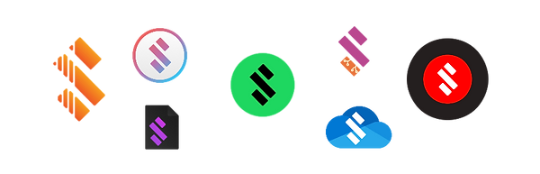

Strix Music App
- Listen to your music from Local Storage and OneDrive
- Faithful UI recreations of Zune Desktop and Groove Music.
- Offline first. No internet connection is required to use this app.
- Private by design. No logs are generated and no servers are contacted, unless you say so.
- Free of charge. We'll never have ads, paywalls, or charge you to use the App or SDK.
- Open source. Licensed under GPLv3, you have the freedom to inspect, run, copy, distribute, change and improve this software.
- Planned support for Windows, macOS, Linux, Android, iOS and WebAssembly.
- Planned support for Spotify.
- Alpha builds are available to our supporters on Patreon.
Strix Music SDK
- The universal music development kit, now available for .NET.
- Use any music source or plugin from our ecosystem in your own project.
- Add new functionality to any app that uses the Strix Music SDK.
- Open source. Licensed under LGPL, you have the freedom to inspect, run, copy, distribute, change and improve this software.